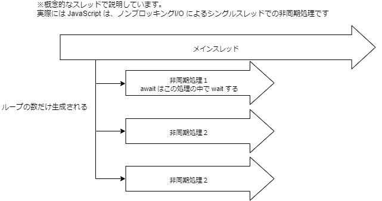

ES6+(JavaScript)
筆者: 海老原 賢次（ebi311@gmail.com）
作成日: 2022-04-28
更新履歴:
-
2023-09-27:
- DynamicImport の記載を追加
Promise.all以外の並列処理の記載を追加- Null合体演算子、合体代入演算子の記載を追加
- 配列の関数を追加
- 真偽値の記載を追加
- イテレーターとジェネレーターの記載を追加
-
2022-04-28: 新規作成
概要
ここでは、JavaScript の言語規格である ECMAScript について書いています。
また、JavaScript は、ECMAScript のバージョンアップに合わせてその機能も追加されているので、最新の仕様についても述べます。
ECMAScript
JavaScript は、Web ブラウザの黎明期に Netscape というブラウザに搭載されたのが始まります。
そのあと IE や他のブラウザでも採用され、Flash のスクリプトや Windows のシェルとしても採用されました。
しかし、それぞれ独自の仕様が追加されたり、同じ名前のメソッドでも動作が異なるなど、かなり混乱した時代がありました。
そのため、ECMAScript としして標準の規格を作ることとなりました。ECMAScript は、規格の定義であり、いわば仕様書のようなものです。言語では有りません。
現在のブラウザでは、この ECMAScript の仕様に従って作成されており、ブラウザ間の差異はかなり少なくなりました。しかし、ECMAScript は毎年更新され、各ブラウザはそれに追いつこうとしていますが、ややばらつきがあります。特に新しいの仕様については注意が必要です。
ブラウザの対応状況は、下記のページで確認できます。
ECMAScript 2016+ compatibility table
ECMAScript のバージョンは、2015 年以前は ES6 などの番号が、2015 年移行は ES2020 など発行年が付きます。
Node.js は、ECMAScript に比較的早い段階で対応されるので、最新の仕様を試したい場合には良いと思います。
ECMAScript 2015 (ES6) とそれ以降のバージョン | Node.js
ECMAScript で大きく変わった、ES6(2015) 以降の仕様について、確認していきましょう。
ESModules
標準機能として、モジュール機能が導入されました。
具体的には、JavaScript で別な JavaScript ファイルを読み込んで使用することが出来ます。
他のファイルを参照する場合 importを使います。importされる側は、提供する変数やメソッド、クラスなどを exportする必要があります。
| index.js |
|---|
| import { getDocument, putDocument } from "./eimApi"; // .js は必要ない
service.get = () => {
getDocument();
};
|
| eimApi.js |
|---|
| export const getDocument = () => {
// 関数の処理
};
export const putDocument = () => {
// 関数の処理
};
|
デフォルトエクスポート、というものもあります。この場合、importする側は下記のように書くことが出来ます。下記の例のように、オブジェクトを渡すことが多いです。
| index.js |
|---|
| import eimApi from "./eimApi";
service.get = () => {
eimApi.getDocument();
};
|
| eimApi.js |
|---|
| const api = {
getDocument = () => {
// 関数の処理
}
}
export default api;
|
また、npm install(yarn add) で入れた npm のパッケージ(node_modulesディレクトリに入っている)は、パス無しで指定します。
| index.js |
|---|
| import {useState} from "react";
export const UserLabel = () => {
const [user, setUser] = useState();
...
}
|
上で書いたimport(静的import)では、起動時にソースコードファイルを読み込むときに、全て参照されて読み込まれます。数が多いと起動に時間がかかる場合があります。
ダイナミックimportを使用すると、プログラムでその箇所を処理が通るときに読み込むことが出来ます。
一度読み込まれたものはキャッシュされ、複数回同じものが読み込まれることはありません。
また、主要なモダンブラウザでも動作するので、必要に応じて JavaScript ファイルをダウンロードする、ということもできます。(ただし、Node.js と違って、サーバーのnode_modulesからのロードはできません。Webサーバーで公開されているファイルのみです)
ただし、ダイナミックimport では、静的解析ツールの恩恵を受けられない場合があるなどデメリットもあるので、必要に応じて使うようにします。
| // startModule 関数が呼ばれたときに、module.js を読み込む
const startModule = async () => {
const module = await import("./module.js");
module.start();
};
|
HTML の <script>で 複数読み込む場合との違い
HTMLの <script>タグで複数の JavaScript ファイルを読み込む場合、依存関係は明示されないので読み込む順番などを開発者がコントロールする必要があります。
ESModule ではJavaScriptエンジンがコード中に書いてある importによって依存関係を解決するので、読み込み順を意識することはないです。また、JavaScriptロード時にすべての依存関係を解決してから実行されるので、そういったコントロールも必要なくなります。(コード実行中に動的に import することも出来ます。)
これは、Node.js で当然サポートされており、Edge や Chrome、Firebox といったブラウザでもサポートされています。
ただし、ブラウザの場合 importの数だけダウンロードされます。ほとんどのプロジェクトでは、数十個、多いものでは100以上のファイルに分割することになるので、現実的ではないです。よって、Webpackなどを使用して事前ビルドで1つの（あるいは数個の）ファイルにまとめることが常です。
Node.js では、起動時にコードをロードし解決するので、ファイルの数が多い場合起動にやや時間がかかります。ですが、WebAPPのサーバーサイドなどでは、起動時の1回だけなので問題になることは多くないでしょう。
変数と定数
JavaScript では変数の宣言は、varでしたが、let, constが追加されました。
これにより、varの仕様は非推奨になっています。
letは、値を入れ替えることができる変数、constは入れ替えられない変数です。
意外かもしれませんが、殆どの場合 constで賄えます。基本的にはconstを使い、必要な場合に letを使う、のが推奨されています。ESLint でもそういったルールがデフォルトになっています。
勘違いしやすいのは、constで定義したオブジェクトのプロパティの値は変えられる、ということです。これは、オブジェクト自体は同じもの、だからです。ちなみに、内容が全く一緒だけど別に定義したオブジェクト、と言うのは同一のオブジェクトではないので、代入できません。
| let l = "a";
l = "b"; // 👍 OK
const c = "a";
c = "b"; // ❌ エラー
const o = { name: "ebihara" };
o.name = "kenji"; // 👍 OK
o = { name: "kenji" }; // ❌ NG
|
arrow 関数
関数は、function を使って定義しますが、下記のような書き方ができるようになりました。
| function hoge(a) {
console.log(a);
}
const hoge = (a) => {
console.log(a);
};
|
JavaScript では、Function はオブジェクトの扱いなので、変数のように関数の引数に指定できたりします。Arrow 関数のほうがそのことが直感的にわかりやすいと思います。
この 2 つは ほぼ 同じですが、'this' の取り扱いが異なるので、注意です。
通常の function だと、呼び出し⽅によって 'this' の内容が異なります。
arrow 関数であれば、this は書いたところの 'this' に拘束されます。
arrow 関数のほうが、わかりやすいので function はできるだけ 使わない ほうが良いです。また、この書き方が様々なサンプルでも示されていますし、React でも普通に使われます。慣れておいたほうがいいでしょう。
しかし、オブジェクトのメソッド（後述するクラスも同様）に関しては、this の取り扱いは function でないと正しく有りません。
なので、function 形式が全くなくなる、というわけではないです。
| // 👍 正しい
const o = {
name: "hoga",
setName(s) {
this.name = s;
},
};
o.setName("fuga");
console.log(o.name); // -> 'fuga';
// ❌ NG
const o = {
name: "hoga",
setName: (s) => {
this.name = s;
},
};
o.setName("fuga");
console.log(o.name); // -> 'hoge';
// このときの this は、グローバルの this = window(ブラウザ上での場合) になります。
console.log(window.name); // -> 'fuga';
|
テンプレートリテラル
⽂字列リテラルとして、 '"ダブルクォーテーション"' と ''シングルクォーテーション'' が使われます。
これに加え、 'バッククォート' も⽂字列リテラルとして利⽤できるようになりましたが、これは、改行を含んだり、内部で変数を埋め込んで展開できるようになりました。
| let name = "ebihara kenji";
let date = new Date();
console.log(`こんにちは! ${name} さん!`); // -> こんにちは! ebihara kenji さん!
console.log(`今は ${date.toString()} です。 `); // -> 今は Tue Jun 12 2018 12:58:17 GMT+0900 です。
// 改行もいける
console.log(`今は
${date.toString()}
です。 `);
// ↓
// 今は
// Wed Jun 13 2018 14:34:43 GMT+0900 (東京 (標準時))
// です。
// エスケープしないで出力する
console.log(String.raw`改行は\nでできます`);
// 改行は\nで返されます。
|
最後の記述は、 タグ付きテンプレート と⾔われるものです。String.raw は関数です。
ここでは詳細は説明しませんが、ライブラリではこの呼び方をすることも有るので、こういう書き方も有る、と覚えておいてください。
テンプレートリテラル (テンプレート文字列) - JavaScript | MDN
デフォルト引数
関数の引数の宣⾔で、引数が指定されないときのデフォルト値を指定できるようになりました。
| const hello = (name, keisho = "さん") => {
console.log(`ようこそ ${name} ${keisho}`);
};
hello("kenji"); // -> ようこそ kenji さん
|
可変⻑引数
関数の引数で、可変の数の引数を宣⾔できるようになりました。ただし、他の引数の最後に指定する必要があります。
| const hello = (name, ...keisho) => {
keisho.forEach((a) => {
console.log(`ようこそ ${name} ${a}`);
});
};
hello("kenji", "さん", "さま", "くん");
// ようこそ kenji さん
// ようこそ kenji さま
// ようこそ kenji くん
|
オブジェクトの分割代⼊
オブジェクト内のプロパティをそのプロパティと同じ名前のローカル変数で参照する場合、簡単に書くことができます。また、プロパティが undefined の場合の初期値も定義できます。
| const user = {
name: "kenji ebihara",
age: 29,
address: "yoshino-cho kagosima-ken",
};
const { name, age = -1, gender = "unknown" } = user;
console.log(name); // -> kenji ebihara
console.log(age); // -> 29
console.log(gender); // -> unknown
|
配列でも同様に受け取ることができます。
| const [first, second] = ["a", "b", "c"];
console.log(`${first}, ${second}`); // "a, b"
|
スプレッド構文（オブジェクトの展開）
オブジェクト内のプロパティを、"..."で同じ名前の変数にすべて展開できます。
展開した内容は 1 階層コピー（いわゆるシャローコピー）で、オブジェクトが含まれる場合、そのオブジェクトはコピー元と同じものが参照さるので、注意が必要です。
| const user = {
name: "kenji ebihara",
age: 29,
address: "yoshino-cho kagosima-ken",
};
const assignUser = {
...user,
assignData: new Date(),
};
console.log(assignUser);
/*
{
"name": "kenji ebihara",
"age": 29,
"address": "yoshino-cho kagosima-ken",
"assignData": "2018-06-12T04:39:46.354Z"
}
*/
|
配列でも同様のことができます。配列のマージや同じ値を持つ別の配列を作成するときなどに便利です。
| const abc = ["a", "b", "c"];
const a123 = ["1", "2", "3", ...abc];
console.log(a123); // -> [ "1", "2", "3", "a", "b", "c" ]
|
クラス定義
function でコンストラクタ関数として書くことにより、クラスっぽい事はできました。
しかし、特別な宣⾔もなく通常の関数との違いがわからないことから、誤って通常関数のように使ってしま
うと、エラーになるならまだしも、場合によってはエラーにもならず変な動作をしてしまうこともあり得
ます。
class ステートメントが追加されたことで、これを利⽤するようにしましょう。
ただし Java や C#異なり、プロパティはコンストラクタの中で定義します。
(TypeScript では、それらに近い記述ができます）
| class Polygon {
// height = 0 // こんな事はできない
// コンストラクタ
constructor(height, width) {
this.height = height;
this.width = width;
}
// getter
get area() {
return this.#calcArea();
}
// private メンバには '#' を付ける
#calcArea() {
return this.height * this.width;
}
}
let square = new Polygon(10, 10);
console.log(square.area);
// 100
|
オプショナル・チェイニング演算子
オブジェクトのプロパティを参照したい場合、オブジェクト自身が null / undefined の判断をすることは多いかと思います。
そのプロパティがオブジェクトで、null / undefined の可能性がある場合、さらにその判断をすることになりますが、if が冗長的になります。
| let name = "";
if (session) {
if (session.user) {
name = obj.user.name;
}
}
|
オプショナル・チェイニング演算子を使用すると、完結に書くことができます。
| const name = obj?.user?.name; // obj か、obj.user が null/undefined の場合、undefined を返します。
|
Promise / async / await
Promise は非同期処理関数で使用されるオブジェクトです。
Promise 以前は、非同期処理が完了したときの関数（コールバック関数）を引数で渡していました。
ある非同期関数の後に別の非同期関数を実行する、ということも少なくなく、このような場合コールバック関数が入れ子になってしまい、コードの見通しが非常に悪くなります。俗にコールバック関数地獄、と言われています。
| asyncFn1((data1) => {
asyncFn2((data2) => {
asyncFn3((data3) => {
asyncFn4((data4) => {
//処理
});
});
});
});
|
非同期関数が、Promise オブジェクトを返すように改善すると、下記のようにメソッド・チェーンの形で書くことができます。
| asyncFn1()
.then((data1) => {
return asyncFn2();
})
.then((data2) => {
return asyncFn3();
})
.then((data3) => {
return asyncFn4();
})
.then((data4) => {
/* 処理 */
})
.catch((e) => {
/* 上のいずれかで例外が発生した場合に、catch が処理される */
});
|
Promise を返す非同期関数を作成するには、new Promise として Promise オブジェクトを作成します。引数に処理の関数を定義します。成功時には resolve（関数の第 1 引数）、失敗時に reject（関数の第 2 に引数） を実行します。
| const asyncFn1 = () => {
return new Promise((resolve, reject) => {
let result = true;
// 何かしらの処理
if (result) {
// result は何かしらの処理の結果が入っていることと仮定する
resolve(result); // 引数に与えたオブジェクトを非同期関数の戻り値となる
} else {
reject(new Error("エラーが発生しました")); // reject が呼ばれると、呼び元の catch が処理される。
}
});
};
|
async / await は、メソッドチェーンの形ではない、非同期処理関数を実行する書き方です。
| // await を使用するには、その関数が async 宣言されている必要がある。
// async 宣言した関数は、自動的に Promise を返す非同期関数となる。
const fn = async () => {
try {
// 非同期処理の例外(reject)は、try ~ catch で処理できる
const result = await asyncFn1(); // resolve で渡された値が result に入る
// await があると asyncFn1 が終了するまで、次の処理に進まない。
// asyncFn1 完了後の処理
// ...
return obj; // return した値が、非同期関数の戻り値となる。Promise での resolve と同じ
} catch (e) {
throw e;
}
};
|
非同期並列処理
Promise.all()を利用すると、複数の非同期処理を並列で実行することができます。
非同期処理を何回か呼ぶ、それぞれの関係性はない、そのような場合はできるだけ並列処理を行いましょう。
| const asyncFn1 = () => {
return new Promise((resolve, reject) => {
setTimeout(() => {
resolve("asyncFn1");
}, 1000);
});
};
|
.all()と同じよう関数として、.allSettled(), .any(), .race() があります。それぞれ、Promiseオブジェクトの配列を渡し、それらを並列に実行します。
異なるのは、終了するタイミングと、rejectがあった場合の挙動です。用途にあった関数を使いましょう。
|
終了タイミング |
reject があった場合 |
| all |
すべての Promise が終了したとき。すべての成功した結果を返す |
直ちに終了 |
| allSettled |
すべての Promise が終了したとき。すべての成否を含めた結果を返す |
すべての Promise が終了するまで待つ |
| any |
1つでもresolveしたら終了。その結果のみを返す。 |
いずれかがresolveになるまで処理する。 |
| race |
1つでもresolveしたら終了。その結果のみを返す |
直ちに終了 |
用途例
|
用途例 |
| all |
すべての非同期処理が必要で、1つでも失敗すると、全体をやり直す必要があるときなど |
| allSettled |
失敗した処理だけを再処理するときなど |
| any |
複数のリソースから同じデータを取得する場合。DBとキャッシュなど。失敗しても気にしない |
| race |
複数のリソースから同じデータを取得する場合。DBとキャッシュなど。失敗したときは再試行するなど |
Promise - JavaScript | MDN
配列のメソッドの拡張
配列（Array) を順次に処理する場合、for を使うことが多いでしょう。ES2015 以降では、配列のメソッドが拡張され、関数で順次処理を書くことができるようになっています。
これらを使うことで、for ~ ofや.forEach()を使うことは、ほぼなくなります。ベストプラクティスとして、for ~ ofや.forEach()は、他で代用できないときに最終手段として使う、ということを覚えておいてください。
ここではその一部を紹介します。
| const users = [
{ age: 10, name: "taro" },
{ age: 20, name: "jiro" },
{ age: 30, name: "hanako" },
];
// age が20以上のオブジェクトを抜き出す
const over20 = users.filter((user) => user.age >= 20); // (user) => { return user >= 20 } と同じ意味です
console.log(over20); // [ { age: 20, name: 'jiro'}, { age: 30, name: 'hanako'} ]
// 条件にあった初めの値を１つ抽出する
const firstUnder21 = users.find((user) => user.age <= 20);
console.log(firstUnder21); // { age: 10, name: 'taro'}
// 条件にあった最後の値を1つ抽出する
// ※正確には、配列の後から走査して、初めに条件に一致したものが返されます。
const lastUnder21 = users.findLast((user) => user.name <= 20);
console.log(lastUnder21); // { age: 20, name: 'jiro'}
// 配列内に条件に合うものが含まれるかどうか
const exist = users.includes((user) => user.name === "saburo");
console.log(exist); // false
// 配列から、別の配列を生成する。
const displayList = users.map((user) => `名前:${user.name} / 年齢:${user.age}`);
console.log(displayList); // ["名前:taro / 年齢:10", "名前:jiro / 年齢:20", "名前:hanako / 年齢:30"]
// 配列の値を蓄積して、単一の戻り値を返す
const nameChain = users.reduce(
(accumulator, user) => `${accumulator} / [${user.name}]`,
"" /*初期値*/,
);
console.log(nameChain); // "/ [taro] / [jiro] / [hanako]"
// インデックスを使って配列の一部を抜き出す（元の配列に変化はない）
const a2 = users.slice(1, 2); // インデックス 1 から インデックス 2 までを取り出す
console.log(a2); // [{ age: 20, name: "jiro" }, { age: 30, name: "hanako" }]
const last = users.slice(-1); // 最後の1つ目 から 1つ取り出す = 配列の最後の項目だけ取り出す
console.log(last); // [{ age: 30, name: "hanako" }]
// 配列を順次処理する
users.forEach((user) => {
// user を使った処理
console.log(user);
});
// インデックスを指定して値を取り出す（逆方向からも可能）
const firstUser = users.at(0); // 0番目の要素を取り出す
const lastUser = users.at(-1); // 最後の要素を取り出す
const boobyUser = users.at(-2); // 最後から2番目の要素を取り出す
// 以下は破壊的メソッド
// 配列の指定したインデックスに要素を追加する
users.splice(1, 0, { age: 40, name: "saburo" });
console.log(user); // [{"age":10,"name":"taro"},{"age":40,"name":"saburo"},{"age":20,"name":"jiro"},{"age":30,"name":"hanako"}]
// 配列から指定したインデックスを削除する
users.splice(2, 1);
console.log(user); // [{"age":10,"name":"taro"},{"age":40,"name":"saburo"}, {"age":30,"name":"hanako"}]
|
for ~ of
配列を巡回させるときに、for ~ in を使用していませんか？これは、思わぬ動作の不具合を招きます。
for ~ in は、配列をループさせるのではなく、オブジェクトが持っているプロパティ を巡回させるものです。
配列におけるインデックスも、プロパティ扱いなので配列で使えなくはないですが、間違ってオブジェクトを渡してしまってもエラーにならず、意図しない動きになります。
また、JavaScript は型に対してゆるい仕様です。配列のオブジェクトに任意の名前のプロパティも付けることが可能ですが、それも巡回の
確実に配列を巡回させるには、for ~ of を使うべきです。
| const array = ["a", "b", "c"];
array.name = "";
for (v in array) {
console.log(v);
} // 0, 1, 2, name
for (v of array) {
console.log(v);
} // a, b, c
|
ただし、webpack でコンパイルする場合、for ~ of は新しい記法なのでこれと同じ動きをするようなコードに変換されますが、サイズがかなり大きくなるようです。
よって、forEach を使うことをが推奨されます。
配列の順次処理での非同期処理
配列を順次処理する中で、非同期の処理を呼ぶ場合注意が必要です。
for ~ of や、forEach など Array のメソッドの場合、下記のようにしても 1 つ 1 つの非同期処理の完了を待たずに次の配列に移ります。
| const array = ["a", "b", "c"];
array.forEach(async (item) => {
await asyncFn(item); // この完了を待たずに配列の次の値の処理に進む
});
|
上と同じ。こちらであれば、非同期処理の完了を待たずに次の配列の処理に進むことが判りやすいですね。
| const array = ['a', 'b', 'c'];
array.forEach((item) => {
// Promise オブジェクトを返して関数はすぐに終わる。
// Promise の中の関数は、非同期で実行される
new Promise((resolve) => {
asyncFn(item).then(() => resolve());
}
});
|
これは、関数の中では待つのですが、その外側には Promise オブジェクトを返して処理が続行してしまうからです。

配列の順次処理の中に非同期処理を実行する場合は、次のいずれかの戦略を考えます。
-
1 つづつ非同期処理の終了待って進む、シーケンシャルに処理する方法。
-
配列の数だけパラレル（並列）に処理して、すべての完了を待つ方法。
-
パラレルに処理する上限を設けて、その上限ごとに処理する方法。
これらは配列の数が問題になります。非同期処理が時間のかかる処理の場合は、シリアルに処理するとパフォーマンスに影響有るでしょう。
配列の数が多い場合は、パラレルに処理するとマシンのメモリなどスペックの問題があるかもしれません。
場合によって方法を選択する必要があります。
| const array = ['a', 'b', 'c'];
for (item of array) {
await asyncFn(item); // この完了を待って配列の次の値の処理に進む
});
|
パラレルに処理する場合は、Promise.all(allSettled, any, race) が使えます。
| const array = ["a", "b", "c"];
await Promise.all(
// Promiseオブジェクトの配列を生成して、allにわたす
array.map((item) => {
return asyncFn(item);
}),
);
|
イテレーターとジェネレーター
イテレーターとは、配列のようなオブジェクトを順次処理するための仕組みです。
ジェネレーターは、イテレーターを生成するための関数です。ジェネレーター関数は、function*(*をつけます)で定義される関数です。
| function* makeRangeIterator(start, end, step) {
let iterationCount = 0;
for (let i = start; i < end; i += step) {
iterationCount++;
yield i; // next()が呼び出されると、i の値が出力されて、処理が一時停止する
}
return iterationCount;
}
const it = makeRangeIterator(1, 10, 2);
let result = it.next(); // { value: 1, done: false }
result = it.next(); // { value: 3, done: false }
|
この使いどころとしては、キュー(待ち行列)の処理や、ウィザードのような双方向コミュニケーション処理、for await ~ ofと組み合わせた非同期処理の順次処理などがあります。
末尾のカンマ
オブジェクトリテラルや配列リテラル、関数の引数で、最後の項⽬の後にカンマが付けられます。
後に要素を⾜したり、順番を⼊れ替えたりするときに、カンマを付けたり取ったりする⼿間が省かれるでなるべくつけておくのが良いと思います。
eslint などでは必須のルールとすることができます。
| let obj = {
name: 'ebihara',
age: 29, // OK
};
let arr = [ 1, 2, 3, ]; // これもOK
let fn = (a, b, c,) { /* ... */ } // 仕様上はOKだが、対応ブラウザが限られる
|
数値の区切り文字
ソースコード中に数値リテラルを書くときに、桁数が多いと読みにくくなります。
数値リテラルに区切り文字を入れることができるようになりました。
| const MaxAmount = 100_000_000;
console.log(MaxAmount); // 100000000
|
真値と偽値
JavaScript では、すべての方の値が、真値(true)または偽値(false)に変換できます。
真値と偽値は、if 文などの条件式や&&``||といった短絡演算子で、その値が真か偽かを判断するときに使われます。
| 型 |
真値 |
偽値 |
| オブジェクト |
すべて(空オブジェクト{}でも) |
なし |
| 配列 |
すべて(空配列[]でも) |
なし |
| 数値 |
0, NaN 以外 |
0,NaN |
| 文字列 |
空文字以外(空白文字のみ("_")でも) |
空文字"" |
| null / undefined |
なし |
常に偽値 |
ifの条件式で、”数値が何かしら入っていること”をチェックしようとして、if(num)とすると、num=0のときもfalseと判断されてしまうので、注意です。
if (typeof num === 'number')やif (!!num || num === 0)とすると良いでしょう。
ショートハンド
JavaScript では、省略形などによって、より短いコードで書くことができます。これらのテクニックも知っておくと効率良いコーディングができるでしょう。
3 項演算子
?の右側の式の結果を boolean に変換し、trueの場合は、?の直後の式を、falseの場合は、その後の :の右側の式を実行して結果を返します。
注意しなくてはならないのは、?の右側の式は、暗黙的に boolean に変換されるため、null, undefined は falseになるのですが、string の場合は空文字 ''、number の場合は、 0も 'false' と判断されるので、注意が必要です。(前述の真値と偽値を参照のこと)
| const state = "processing";
// if を使う場合
let stateString1 = "";
if (state === "complete") {
stateString1 = "完了";
} else {
stateString1 = "未完了";
}
// 3項演算子を使う場合
const stateString2 = state === "complete" ? "完了" : "未完了";
|
短絡演算子(||, &&), Null 合体演算子
| const name = "";
// || の例
// if を使う場合
let nameString1 = "";
if (name === null || name === undefined || name === "") {
nameString1 = "(空)";
}
// || を使う場合
const nameString2 = name || "(空)";
// && の例
const age = null;
// if を使う場合
if (age !== null && name === null && name === undefined && name === "") {
console.log("成功");
} else {
console.log("失敗");
}
// && を使う場合
console.log((age && name && "成功") || "失敗");
// Null 合体演算子 左辺が null/undefined の場合、右辺を、そうでない場合、左辺を返す
let state = null;
const stateString1 = state ?? "(割当なし)";
console.log(stateString1); // '(割当なし)'
stat = "";
const stateString2 = state ?? "(割当なし)";
console.log(stateString2); // ''
|
||はよく利用されますが、これも string の空文字や数値の 0も false と判断され、右側の式が採用されます。
null および undefined のときだけ falseと判断したい場合は、?ではなく、??（Null 合体演算子） を使います。
| const state = "";
const stateString1 = state || "(割当なし)";
console.log(stateString1); // '(割当なし)'
const stateString2 = state ?? "(割当なし)";
console.log(stateString2); // ''
|
論理積代入、論理和代入、Null合体代入
論理積代入とは、変数に値を代入する際、その変数が boolean に変換したときに、trueの場合に限り、代入する演算子です。
論理積代入とは、変数に値を代入する際、その変数が boolean に変換したときに、falseの場合に限り、代入する演算子です。
合体代入とは、変数に値を代入する際、その変数が null または undefined の場合に限り、代入する演算子です。
| // 論理積代入
let a = 1; // 1 は true と判断される
a &&= 2; // a は 2 になる
let b = 0; // 0 は false と判断される
b &&= 2; // b は 0 のまま
|
| // 論理和代入
let a = 1; // 1 は true と判断される
a ||= 2; // a は 1 のまま
let b = 0; // 0 は false と判断される
b ||= 2; // b は 2 になる
|
| // Null合体代入
let a = null;
a ??= 2; // a は 2 になる
let b = 0;
b ??= 2; // b は 0 のまま
|
オブジェクト・リテラルでプロパティ名と変数名が同じ場合
| const name = "ebihara";
const age = 47;
const user = {
name, // name: name と同じ
age, // age: age と同じ
};
|
関数の戻り値
| const fn1 = () => ({ name: "ebihara" });
const fn2 = (date) => date.toISOString();
// 以下と同じ
const fn1 = () => {
return { name: "ebihara" };
};
const fn2 = (date) => {
return date.toISOString();
};
|
カリー化と部分適用
| const fn = (name, aisatsu) => `${name} さん、 ${aisatsu}。`;
const fn1 = (aisatsu) => (name) => fn(name, aisatsu); // カリー化
const fn2 = fn1("こんにちは"); // 部分適用
fn2("海老原"); // "海老原さん、こんにちは。"
|
上をわかりやすく分解してみる
| const fn = (name, aisatsu) => {
return `${name} さん、 ${aisatsu}。`;
};
const fn1 = (aisatsu) => {
const f = (name) => fn(name, aisatsu); // -(1)
return f; // 関数を返す関数
};
const fn2 = fn1("こんにちは"); // fn2 には、(1) の関数が入る
fn2("海老原"); // "海老原さん、こんにちは。"
|